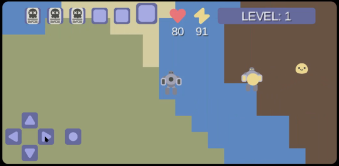

Terralink Mini is an android game I created for a uni project. It is essentially a miniature version
of a game idea of mine called Terralink.
Terralink is a multiplayer game concept where you go to different planets to find and utilise Martiagels,
special slimes that grant powerful abilities.
This game has a connection to Grimbly Garden that I cannot explain without spoiling the story. :)
Terralink Mini is a much simpler version of the concept, where you run around collecting Martiagels
without dying for as long as you can.
The game even has an
original soundtrack
created by the wonderful raspmary!
